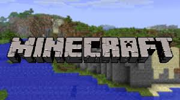

Exploring the World of Minecraft
October 7, 2026 by Tinaya Wildman

Minecraft is a game that allows players to explore, create, and interact with a large open world. Minecraft is like an escape from reality as it gives players the oppurtunity to bring their thoughts to life and the freedom to decide how they want to play. Players can build structures, explore different environments, gather resources, and create their own adventures.
The creative possibilities in Minecraft are endless. Players can build simple houses or even very detailed infrastructure while experimenting with different material and designs. The game aslo encourages problem-solving because players must learn how to collect resources and use them effectively to survive and build.